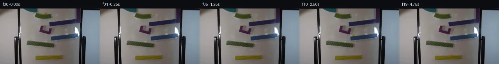

![首帧]()

Round 00
2026-11-05T11:11:06.829019+00:00像素候选变化代码 +207/−0inspection 更新
pixels bab2f69f5d5c9eb4 · code d87b161df4fbe4c0
查看本轮 generate.py 真实 diff
--- previous/generate.py
+++ current/generate.py
@@ -0,0 +1,207 @@
+"""Local pixel continuation: original backdrop + a small shaded glass marble.
+No image models, external assets, rendering engines, or network calls.
+"""
+from pathlib import Path
+import json
+import math
+import numpy as np
+from PIL import Image, ImageDraw
+from scipy.interpolate import CubicHermiteSpline
+from artifact_io import save
+
+ROOT = Path(__file__).resolve().parent
+G = 1500.0 # projected gravity, pixels/s^2; approximate 0.94 m visible height
+RADIUS = 2.65
+FPS = 4
+DT = 1 / FPS
+source = np.asarray(Image.open(ROOT / 'first_frame.png').convert('RGB')).copy()
+assert source.shape == (144, 256, 3)
+
+# Inpaint only the initial marble and its optical fringe. Row interpolation
+# preserves the starter's existing top edge and the board's brightness gradient.
+background = source.astype(np.float64).copy()
+repair_mask = np.zeros((144, 256), dtype=np.float64)
+for y in range(9, 17):
+ for x in range(110, 122):
+ q = ((x - 115.6) / 6.1) ** 2 + ((y - 12.8) / 4.1) ** 2
+ a = float(np.clip((1.12 - q) * 3.0, 0, 1))
+ if y == 16:
+ a *= 0.18
+ w = (x - 109) / 14
+ replacement = source[y, 109].astype(float) * (1 - w) + source[y, 123].astype(float) * w
+ background[y, x] = source[y, x] * (1 - a) + replacement * a
+ repair_mask[y, x] = a
+background = np.clip(np.rint(background), 0, 255).astype(np.uint8)
+
+segments = []
+def append(name, duration, fn):
+ t0 = segments[-1]['end'] if segments else 0.0
+ segments.append(dict(name=name, start=t0, end=t0 + duration, fn=fn))
+ return t0 + duration
+
+def ballistic(name, p0, v0, line_origin, line_slope):
+ # Solve intersection with the next ramp's center-height line.
+ px, py = p0; vx, vy = v0
+ lx, ly = line_origin
+ a = G / 2
+ b = vy - line_slope * vx
+ c = py - ly - line_slope * (px - lx)
+ duration = (-b + math.sqrt(b*b - 4*a*c)) / (2*a)
+ def fn(t):
+ return np.array([px + vx*t, py + vy*t + G*t*t/2]), np.array([vx, vy + G*t])
+ append(name, duration, fn)
+ return fn(duration)
+
+def roll(name, p0, vx0, slope, end_x):
+ ax = (5/7) * G * slope / (1 + slope*slope)
+ px, py = p0
+ # Select the positive root reaching the downhill end after any uphill roll.
+ roots = np.roots([ax/2, vx0, px - end_x])
+ duration = max(float(z.real) for z in roots if abs(z.imag) < 1e-8 and z.real > 0)
+ def fn(t):
+ dx = vx0*t + ax*t*t/2
+ vx = vx0 + ax*t
+ return np.array([px + dx, py + slope*dx]), np.array([vx, slope*vx])
+ append(name, duration, fn)
+ return fn(duration)
+
+# Short rightward rollout. Initial momentum represents release already under way
+# in frame 00, where the marble is at the starter curve's low point.
+starter_duration = 13.0/85.0
+starter = CubicHermiteSpline(
+ [0, starter_duration], [[115.2, 12.9], [128.2, 11.3]],
+ [[85.0, 0], [85.0, -20.0]])
+append('starter rollout', starter_duration,
+ lambda t: (starter(t), starter(t, 1)))
+p, v = starter(starter_duration), np.array([85.0, -20.0])
+p, v = ballistic('starter to upper ramp', p, v, (127.0, 32.5), -0.105)
+# Contact impulses reduce tangential speed; gravity then reverses the uphill roll.
+p, v = roll('upper ramp: uphill then left', p, 45.0, -0.105, 127.0)
+p, v = ballistic('upper ramp to purple catcher', p, v, (114.0, 54.3), 0.0)
+
+# The visible purple U redirects the impact, carries the marble through its
+# valley, and releases it up/right. A measured centerline with Hermite timing
+# approximates that short multi-contact event, rather than solving 3D contacts.
+curve_times = np.array([0, .080, .135, .215, .290, .360])
+curve_points = np.array([p, [108.4,52.5], [111.0,53.9], [121.0,55.5],
+ [127.0,53.0], [130.0,48.4]])
… diff truncated; 120 more lines …